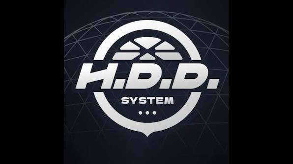
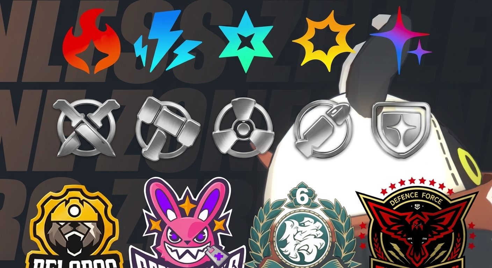
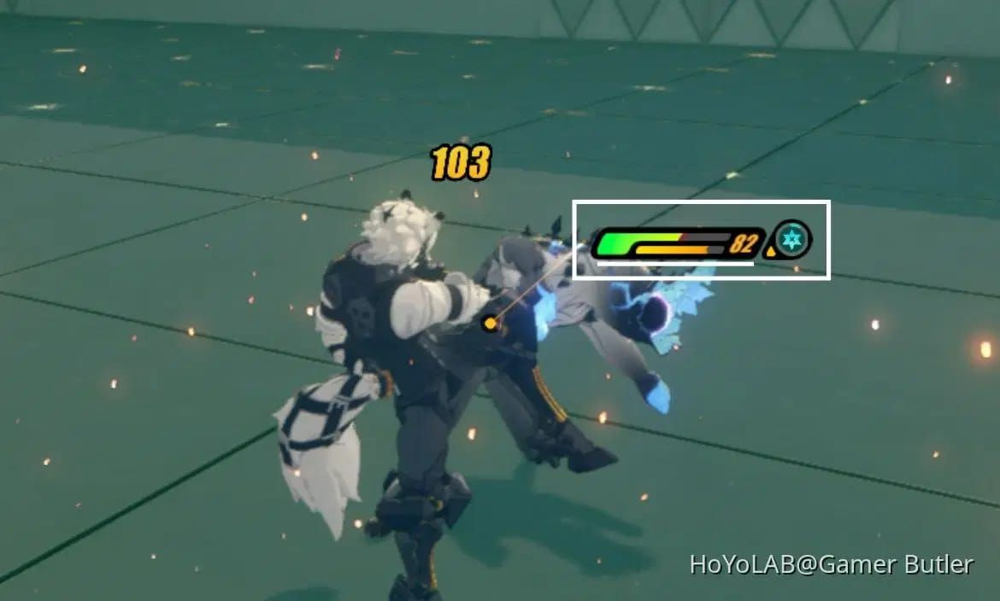

Conceptos Fundamentales del Juego
Las Cavidades y los Proxies: Las Cavidades son dimensiones desastrosas donde habitan los Etéreos. Tu rol como Proxy es guiar a los Agentes de forma segura en su exploración utilizando la red HDD.
El Sistema de Combatientes: Los Agentes se dividen en atributos principales (Físico, Fuego, Hielo, Eléctrico, Éter, etc) y roles como Ataque, Aturdidor, Apoyo, Anomalía o Defensa para crear sinergias en el equipo.
Mecánica de Aturdimiento: Al atacar enemigos, llenas su barra de aturdimiento. Cuando llega al 100%, el enemigo queda vulnerable y puedes desatar ataques combinados entre tus personajes.
Gestión de Películas y Búsquedas: Utiliza la moneda del juego para realizar búsquedas en la señal de la red y reclutar nuevos Agentes S y amplificadores para potenciar tu equipo.


